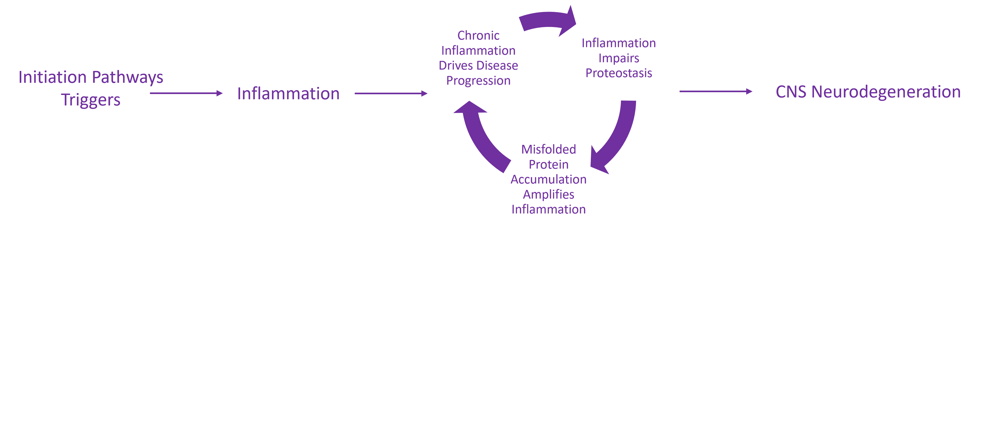

Index
- Background
- Chronic Inflammation Drivers
- Discussion
Background
-
Parkinsonism refers to a group of neurodegenerative diseases that share overlapping motor symptoms and some pathological features. These include Parkinson’s Disease (PD), Multiple System Atrophy (MSA), and Lewy Body Dementia (LBD).
-
LBD affects ~1.4 million people in the U.S.
PD affects ~1 million people.
MSA is rare—fewer than 50,000 cases (designated an Orphan Disease). -
Generally they have a long prodromal period, but after Central Nervous System involvement, the progression rates are significantly different.
-
Today's main therapy—Levodopa—was FDA approved in 1975 - YIKES!. It’s still the standard for PD, often used in MSA, and sometimes used in LBD.
Parkinsonism/Synucleinopathy Spectrum
| Feature/Aspect | Parkinson's Disease | Multiple System Atrophy | Lewy Body Dementia |
|---|---|---|---|
| Select Clinical Presentation | Motor dysfunction, gradual progression post diagnosis | Autonomic dysfunction, motor dysfunction, rapid progression post diagnosis | Cognitive symptoms, hallucinations |
| Pathology Highlights | Protein toxicity (starts with misfolded alpha-synuclein and progresses to insoluble aggregates), chronic neuro-inflammation, occurs in cells with high mitochondria density | ||
| Contemporary Models | Triggers such as environmental toxins, genetic mutations, or pathogens fall into one of two models referred to as 'Body-First' OR 'Brain-First' | ||
General Model of Parkinsonism Progression: Prodromal and Post-Prodromal Phases
Adapted from: Kalia LV, Lang AE. Parkinson’s disease. Lancet. 2015;386(9996):896–912. https://doi.org/10.1016/S0140-6736(14)61393-3
Parkinsonism Pathology



Triggers
Dysbiosis
Chronic Inflammation Drivers
- Mitochondrial Dysfunction
- Proteostasis Dysfunction
- Endogenous Retrovirus (ERV) Derepression
- Endoplasmic Reticulum Stress/Unfolded Protein Response (UPR)
- P-Body Dysfunction
- Misfolded ɑ-synuclein Accumulation
Proposed Effect of Endogenous Retrovirus (ERV) Derepression

Here’s the next step in the ERV derepression model…